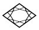
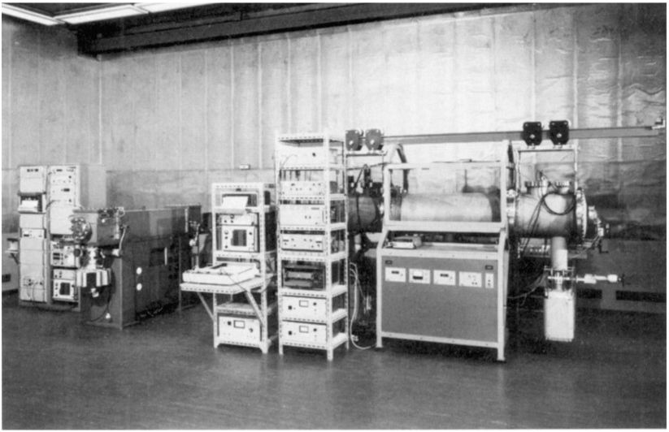
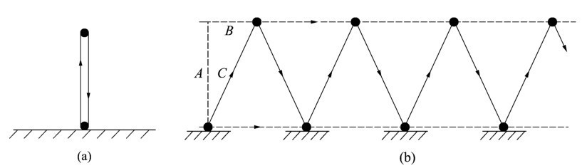
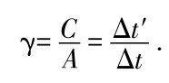
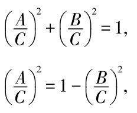
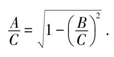
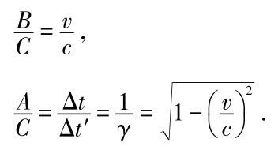
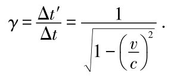
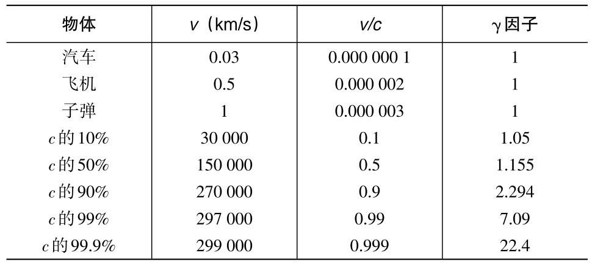
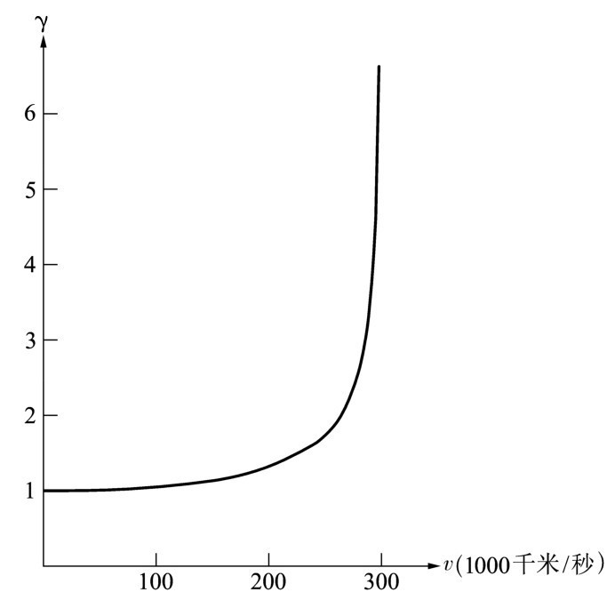

第九章在等我们时，爱因斯坦已经准备好了茶，我们一到就开始享用。然后，这位相对论的创始人转向我发问。
爱因斯坦： 哈勒尔先生，你最近提到光速的测量已经达到了惊人的精度。我记下了你所说的数字：光以299 792 458米每秒的速度传播。现在假定这个速度是个普适的自然常量，那么，我们是否可以在长度单位和时间单位之间，即米和秒之间建立一种联系呢？换句话说，我们不必进行基于某种任意标准——比如保存在巴黎的标准米——的测量；而是可以将光在特定时间内传播的路程作为一种单位。天文学家已经这么做了一段时间了。他们表述距离时用的是光秒、光分和光年，而不是千米。当然，那只有在所测的时间有很高精度时才有效。因此我的问题是：我们对时间的测量能精确到什么程度呢？
哈勒尔： 你的建议很有意义。实际上已经这么用了多年了。有个国际协定，确定光在1秒的299 792 458分之一内所传播的路程为1米。从逻辑上讲，这个标准也定义了光速。因此，把光速的精度测得高于每秒1米，比如说每秒1厘米或1毫米，已经没有意义。现在这个标准已经最后确定下来了。
对光速的极精确测量不会带给我们额外的信息，所影响的只是约束作为长度基本单位的米。当然，依照光在几分之一秒内传播的距离所下的定义，新定义的长度单位与以往所知的米是相等的。这种做法的要点在于，现在我们有了一个在任何地方都能轻松再现的标准。它与各种误差来源都无关，只要米的定义是基于某种金属棒，不论保存得多么好也不可避免地会有误差。只要想一下在那种棒上我们用来标记准确长度的细微刻痕就能明白这点。在显微镜下，它们不再是细线而是看起来像山谷一样。我们可以借助光速恒定的方法通过间接测量长度单位来避免这种不确定性。
你可以看出，作为长度单位的米的新定义是光速的普适性（universality）的一种直接应用，因此也是相对论的一种直接应用。现在我们来谈谈时间的测量。艾萨克爵士，在你所处的年代，时间是按照天文标准来定义的。1秒被定义为1年即地球绕太阳运转一周所需时间的多少分之一。那对于非常精确的时间测量来说显然是不够的。你的一位著名的同胞麦克斯韦（James Clerk Maxwell）在一百多年前在他的《电学和磁学论》（Treatise on Electricity and Magnetism ）一书中就指出，我们应该用原子的结构和振荡来确立空间和时间的准确单位。
牛顿 （打断了我的话）：那听起来非常明智。在整个宇宙中，原子的结构都是相同的，因此在任何地方再现长度和时间单位都不困难。
哈勒尔： 很显然，原子物理学能帮助我们更准确地测量时间，远比测量距离要精确得多。在20世纪30年代，石英晶体的振动就被用于测量时间。它们为当今如此流行的石英钟和石英表提供了标准。
更精确的是所谓的原子钟，其中振动摆被一束振动原子取代了。现在，我们一般用于这种钟上的是铯元素的原子。铯原子的振动在各处都是相同的，因而1秒间隔由一定的振动数来确定，当然，那是个很大的数字。
［告读者：铯原子每秒准确的振动数为9 192 631 770。因此容易算出，光传播3.26厘米的时间就是铯原子振动一次的时间。实验装置见图9.1。］

图9.1 安置在不伦瑞克的德国联邦物理技术研究院的原子钟大厅内的铯原子钟CS-1（左）和CS-2（右）。这些钟组成了德国的基本时间基准。电磁共振器的频率借助于一束铯原子稳定在期望值。之所以能这样做是由于某种特定元素的原子会显示出完全相同的振荡性质。可以通过共振器与原子的适当耦合来调节共振器。（承蒙不伦瑞克德国联邦物理技术研究院惠允。）
爱因斯坦： 时间测量已达到什么精度了呢？
哈勒尔： 相对误差约为10-14 ，即便是在这个领域中做得最好的实验室也是如此。比如，在德国不伦瑞克的联邦物理技术研究院所能获得的最小误差就是这样。这一误差意味着，在1014 秒的时间跨度内原子钟最多会偏差1秒。那只是大约300万年中的1秒啊！因此我们可以公正地说，时间是我们能测量得最精确的物理量。现在，借助于光速不变的性质，我们可以把这种精度转移到距离的测量。
牛顿 （激动地）：那真是精确得令人吃惊！而且，之所以如此就是由于光速的普适性。因此，我们可以有把握地假设，长度单位的校准与测量适当的光信号的传播时间是同样的事情。亲爱的爱因斯坦，你看你的光速不变原理正在得到很好的实际应用。
哈勒尔 （插话）：今天的发现就是明天的校准。这已经成为当今物理学家的格言，而且也正是这一点在推动科学前进，昨天的发现理所当然地会成为新洞察的前提。
牛顿 （又回到我们前一天的讨论）：昨天晚上我们得到的结论是，只有当我们重新考虑空间和时间的基本概念时，普适的光速的思想才有意义。我们已经看到，对两个事件同时与否的回答取决于观察者所采用的坐标系。这直接与我在《原理》中阐述的空间和时间的思想相矛盾。
昨天晚上我曾设法解决这个令人困惑的后果。我得到的结论是，我们必须对每个坐标系、对每个惯性参考系引入一个特定的空间与时间的描述。比如，在行驶的火车上的人就会有他自己的时间和空间的定义；它将与处于静止状态的观察者所用的时间和空间的描述有关，但又不完全一样。
那并不意味着火车与观察者存在于完全不同的世界。他们分享相同的世界、相同的时空。仅仅是描述空间与时间的方式多种多样。换句话说，空间与时间是相关的，描述它们的不同的方式取决于运动的状态。我猜测那就是你把你的理论命名为“相对 论”的原因。
爱因斯坦 （欣赏地看着牛顿）：牛顿，你昨晚对此肯定思考了很多很多。从你的结论中我找不出任何错误。很多年以前，我刚完成我的理论之时，我也以类似的方式解决了这个难题，可却要慢得多。在一个晚上你就解决了我花了几天——即使没花上几周——才解决的问题。
就该理论的名字而言，你并不十分正确。称其为“相对论”并不是我的主意，而是其他人建议的。最初我并不喜欢这个名字，我认为对于一系列其实相当简单的事实来说，它听起来太复杂了。更为重要的是，这个名字并没有起到点子上，因为我的理论的基础是光速的普适性。在经典力学中，光速是相对的；它取决于观察者的运动。但在我的理论中它却是绝对的。因此，我的理论应该称为绝对论。你看，任何事都是相对的，即使是为理论起名也是相对的。
牛顿： 如果对空间和时间的描述的的确确取决于观察者的运动状态，人们就应该能够按照观察者的速度来描述。昨晚我试图把它搞出来，可是没什么进展。因此，也许现在我们可以讨论一下。爱因斯坦先生，你能给我们简单地谈一下你的相对时空的思想吗？
爱因斯坦： 我亲爱的牛顿，我感到非常荣幸，能为经典物理学的奠基人、经典力学的创立者来讲述他自己的思想的进一步发展，因为这就是相对论的要旨所在。首先，请允许我简单地重复一下我的相对性原理（principle of relativity），这是建立理论的基础。对两个彼此相对做匀速直线运动的观察者来讲，适用的物理定律是相同的。特别是，对两个观察者而言，光速是相同的。
哈勒尔： 艾萨克爵士，你可以看到，爱因斯坦先生的原理是你的思想的直接延续。在你的力学中，相同的力学定律适用于两个彼此相对做匀速运动的观察者，这就是我们现在所谓的牛顿相对性原理。无论我们是在静止的实验室里，还是在运动的火车上或是在快速飞行的飞机里搞研究，这都不会有任何差别。爱因斯坦理论的创新之处在于，他断言他的相对性原理不仅适用于力学，而且适用于所有的物理学。它包括电动力学现象，因此还包括涉及光的所有过程。而且那意味着光速是个普适的量。
牛顿 （嘲讽地）： 我当然可以接受你刚才称之为牛顿相对性原理的延续的这个原理。如果我们继续这样进行下去，相对论实际上就成了包含在我的《原理》中的想法。
爱因斯坦： 你当时非常接近于发现相对论了。如果那时有人告诉你在每个参考系中光速都相同，你可能自己就已经发展了相对论。
现在我们还是谈谈相对论中的时间吧。我不想试图去回答时间的真正含义是什么这个古老的问题，我只对如何测量它有兴趣。牛顿先生，在你的《原理》中，你指出在某个特定参考系中，时钟可以被放在空间任意一点并与放在空间其他所有点的时钟显示相同的时间。换句话说，时钟是同步的。
如果你接受我的光速不变原理，就可以实现相同的同步。如果两个时钟在同一地点，无论如何这不会有任何问题。按墙上的钟来调手表时，我们只要读出钟上的时间并把我们的手表调成与之一致即可。
可是，如果我们想要调成同步的两个钟离得很远，事情就不这么简单了。选两名观察者，每人拿一个时钟。一个观察者在地球上，另一个在火星上。光线从地球到火星需要一段时间，比如说5分钟，当然，精确的时间会随着这两颗行星的相对位置而改变。
我们假设，火星上的观察者想把他的时钟调得与地球上的观察者的时钟一致。他向地球发了一个无线电信号询问时间。地球上的观察者立即发送对方所需的信号，信号几分钟后到达火星。然而，火星上的观察者将不能准确地设置他的时钟，因为他要估计光信号从地球到火星所用的时间。
牛顿： 只要及时知道在这一时刻地球与火星间的准确距离，就很容易计算出时差。可是测出那个距离却不那么容易。
爱因斯坦： 当然不那么容易。可我们并不真的需要知道那个准确的距离。我们可以用个技巧。假设地球上的观察者向火星发一个信号并从火星表面反射回来，在特定时间之后回到地球。我已读到过，像这类事情如今实际上可以做到。是真的吗，哈勒尔？
哈勒尔： 非常正确。有一种非常强烈且高度聚焦的光束，我们称之为激光束。它们可以被发射到火星上，而且在地球上可以接收到反射回的信号。
爱因斯坦： 太棒了！这就表示我们可以把信号从地球到火星再从火星返回地球所用的时间除以2，所得的就是我们需要的时差。我们假设正好是5分钟。在某个时间，比如说伦敦时间8点整，时间信号由地球上的发射机发出。时间信号到达火星的那一刻，火星上的观察者就应该把表设定为8：05。于是，这两个时钟就同步了。
牛顿： 是的，我明白，可以借助于无线电或光信号相当容易地把钟调成同步。由于你可以在空间中的任何地方用任何时钟进行这种操作，所以我的结论是，我们可以用这种方法让所有空间在时间上同步，或者，至少在很大一部分空间上能做到同步。在这个空间的所有时钟就会同步并将显示相同的时间。这种情况使我想起我在《原理》中讨论过的绝对时间。
爱因斯坦： 牛顿，我们的这次讨论最好不考虑你的绝对时间。还有些重要的事情我应该补充一下。使地球上和火星上的两个时钟同步并不难，这是因为这二者相对于彼此是静止的。确实，地球上的时钟是以地球的速度在空间运动，火星上的时钟是以火星的速度在空间运动。可是与光速相比，这两个速度的差就非常小，我相信不超过10千米每秒，因此我们在这里可以忽略它。
只要相对于地球上的时钟静止或缓慢运动，在你所涉及的空间任何地方的时钟都同样可以调成同步。可是，只要时钟以极高速度在空间运动，情况就大不相同了。这就是我不想在讨论中考虑绝对时间的原因。
牛顿： 爱因斯坦，我不是想冒犯你，而是想知道，时钟彼此相互运动时会发生什么情况。
爱因斯坦斯斯文文地从烟盒里抽出一支雪茄，用老式打火机点上。不吸烟的牛顿不会知道爱因斯坦喜欢抽雪茄，偏偏又不是最好的那种。他疑惑地看着爱因斯坦，什么也没说。最后，爱因斯坦又继续他的讲话。他开始谈时间延缓，这也许是相对论最奇怪的方面了。
爱因斯坦： 先生们，我现在想要讲的东西可以用任何时钟来证明。为简单起见，我将构造一个特殊的时钟，以便说明要点。
让我们在距离地球150 000千米远的空间放置一颗卫星。它上面安装了一个能反射从地球发出的信号的特殊的镜子。我认为最合适的信号可能是哈勒尔提到过的激光束。
我选择地球与卫星之间的这个特定距离，是因为光传播这段距离正好需要半秒钟。因此，光从地球到卫星再从那里返回地球，正好用1秒钟。
哈勒尔 （突然插进来）：此处我想说，你刚才所描述的这种卫星确实存在。它们被用于诸如在欧洲与加利福尼亚之间进行电话通信。电话信号由地球上的发射机发射到卫星上，然后再返回到地球上的接收器。在伦敦和洛杉矶之间进行电话通话时，电话信号的传播距离约为150 000千米；显然，这需要大约半秒。当你与加利福尼亚的人通话时，你可以明显地察觉到这种时间滞后。由于电话信号的这种不寻常的时间滞后，没有经验的通话者有时会感到相当烦。
牛顿和爱因斯坦都没往加利福尼亚打过电话。牛顿跃跃欲试。我们决定做个小实验，给爱因斯坦寓所的电话派一个不太适合的用场，费用由爱因斯坦协会来付。当时，加利福尼亚正值午夜后不久。因此我拨通了一个号码，我知道该号码随时都有人接听。这是帕萨迪纳的加州理工学院消防站，过去我曾几度在那儿工作。有人立刻接听了电话。我把听筒递给牛顿，他开始与加州理工学院的接线员闲聊，只是想证实是否真的存在我所说的时间滞后。
我们的小实验显然给牛顿留下了深刻的印象。这是他第一次体验到电磁信号有限的传播速度的效应。
我们的主人似乎也对牛顿的电话实验很有兴趣。
爱因斯坦： 我们还是回到我的时钟上来吧。光信号从地球上传播到卫星再回到地球需要1秒。我在此处所构建的是个相当特殊的时钟。它的时间既不是由摆也不是由石英晶体的振动来确定的，而是由光信号在卫星和地球站之间的来回反射来确定的，有点像光摆（light pendulum）。我们可以称之为光时钟（light clock）。
现在让我们想象，从快速运动经过地球的一艘宇宙飞船上观察这只光时钟。观察者从他的宇宙飞船的舷窗能看到什么呢？他会看到地球和卫星这二者都在快速地经过他的宇宙飞船，因为他认为他自己是静止的。现在假设这个观察者在光信号来回传播时可以跟上它们。
牛顿： 真的能那么做吗？我认为应该很难跟上光信号。这些光子只是在地球和卫星之间来回反射。
爱因斯坦： 从原理上讲，那不是问题，而且现在我只对原理感兴趣。比如，假设在每次光线反射时，我们的光时钟发射出特殊的无线电信号，而且宇宙飞船接收这个信号。以这种方式，宇宙飞船上的观察者就能很好地了解光时钟的运转。那样他就可以在光通过空间的路径上跟上光信号，至少可以间接地这么做。
爱因斯坦拿了一张纸，并且画了光信号的路径。

图9.2 处于静止和运动的光时钟。（a）一束激光信号从地球上的发射机发射到固定轨道中的卫星上，再从那儿反射到地球，再反射回卫星，如此反复下去。（b）从经过的宇宙飞船看，光信号沿着锯齿形路径传播。两条虚线分别为卫星和发射机的轨迹。
爱因斯坦： 光信号传播1秒时，地球和卫星都在空间运动；宇宙飞船上的观察者看到的光信号的路径像一条锯齿形的线。让我们观察这个信号在一个来回即从地球到卫星再回来这段时间内它的路径。
牛顿： 你是说在1秒内吗？
爱因斯坦： 我没那么说，牛顿；我只是说信号完成从地球到卫星再返回这样一个来回所用的时间。我们将会发现，当观察者从他的宇宙飞船上测量这段时间时，它一般不等于1秒钟。
牛顿迷惑甚至是惊慌了，他看着爱因斯坦。爱因斯坦指着他的图继续说着，并不为牛顿的反应所动。
爱因斯坦： 我们马上就可以看到，在宇宙飞船系统中光信号的路径比在地球系统中的长一些。我们知道，在地球系统中，路径长度正好等于1光秒，即大约300 000千米。在宇宙飞船系统中，路径的确切长度取决于宇宙飞船相对于地球的速度。如果说宇宙飞船的速度不超过每秒几千米，你会发现光信号的路径长度几乎没有变化。可是，如果宇宙飞船相对地球运动得很快，比如说每秒100 000千米，这种效应就会明显可察觉了。
哈勒尔： 在宇宙飞船系统中的路径更长也并非不正常。在顺流而下的船的甲板上，当乘客在左舷与右舷之间散步时也是这样。对于岸上的观察者，乘客所走的路程比船的宽度要长很多，因为当乘客在船上从一边走到另一边时，船已走了一段距离。
在岸上的观察者的系统中，那是一个锯齿形的路径，就像爱因斯坦刚才画的光信号的路径那样。
牛顿 （小心地选择着他的用词）：那很显然。可是，我还是认为在爱因斯坦的时钟与你的小船的例子之间有差别。在甲板上散步的乘客的速度显然不仅取决于他步行的速度，还取决于小船运动的速度。二者的速度越快，其结果就是乘客的速度越快。
可是对光来说就不一样了，因为光在每一个系统中速度都相同。因此按照爱因斯坦的锯齿形路径传播的光，应该具有准确的速度而且一点也不会超过该速度。那就意味着……
牛顿突然停下来不说话了。从他脸上能看出他在紧张地思考。爱因斯坦一跃而起，从牛顿停顿的地方继续讲下去。
爱因斯坦： 确实如此。那意味着宇宙飞船系统的时间与地球上的时间不同。在宇宙飞船系统中光信号所要走的路程比在地球系统中的更长。而另一方面，在两个系统中速度都一样，因此在宇宙飞船系统中的时间间隔必定大于1秒。换句话说，时间延缓了。地球系统中的1秒，就是我们的光时钟的1秒，它在宇宙飞船系统中看起来像是比1秒长的一段时间间隔。专家们称之为“时间延缓”（time dilation），但也可以称之为时间延伸（stretching of time）。
听着听着，牛顿的脸色变得苍白。爱因斯坦叙述的这些新认识显然潜入了他的意识。当他第一次面对在我们这个世界上最令人吃惊的现象之一，即不存在普适的时间，即便是时间也取决于运动状态的时候，我能很清楚地想象出他的感受如何。
爱因斯坦很同情牛顿，他不再讲下去。顿时爱因斯坦的寓所里异乎寻常地安静，我们每个人都沉浸在自己的思考之中。过了一会儿，牛顿继续开始讨论。
牛顿： 爱因斯坦，我开始认识到，时间延缓的发现——这在我看来是个令人吃惊的现象——最终使我的绝对时间观念破产了。我相信我现在理解了光速普适性这个令人吃惊的后果。只是还有几个方面我不太清楚。我相信你可以给我解释一下。
爱因斯坦： 请发问吧，牛顿！我会尽力回答你的问题的。
牛顿： 我确实明白了你为什么要利用这种复杂的光时钟图像，这种地球和卫星系统，来表述你的想法。可是，不论时间延缓在你的光时钟和光速不变的情况下看起来是多么合理，你能肯定它真的意味着时间的普遍延伸吗？换句话说：时间延缓对于像你的手表这种普通钟表或任何其他周期性过程，比如你的脉搏，是否也是真实的呢？
爱因斯坦： 当然。我利用光时钟得到我的时间延缓的观点，只是因为这种方式便于理解。我也可以用一只普通时钟，但那更难以说明有关的效应。然而，时间延缓对于所有时钟都正确。它与时钟没有直接联系，而只是与时间的流逝有关。所有事件都同样受影响，包括化学和生物过程，甚至还包括老化过程。
圣奥古斯丁曾写道：“时间就像来去匆匆的事件的一条河流，其水流是强有力的；一件事情一进入视线马上就随波而去，另一件事情立即取代了它的位置。”他是对的，尽管他不知道时间的流逝并不稳定，而是取决于观察者的运动状态。如果你喜欢河流这个例子，就不要认为水是均匀流动的。想一想有不同水流的宽阔的河流吧，有湍急的水流，也有缓慢流淌的支流。
对于宇宙飞船上的观察者，地球上的事件在他看来变慢了。比如，如果他借助无线电信号观察地球上的一个同事的心跳，他会发现心脏并不是按每分钟大约70次的普通脉搏数在跳，而是可能下降到每分钟30次。下降多少显然取决于宇宙飞船的速度。可那并不真成问题；对快速经过的观察者来说，所有事件看起来都变慢了。
牛顿 （突然插入）：这乍听起来确实相当荒唐。有一点我还是把握不住。你说地球上的事件对于由此经过的宇宙飞船上的观察者来说似乎慢下来了。不错，我接受。可现在我要扭转局势了。我在地球上安排一个观察者，让他观察经过的宇宙飞船。由于宇宙飞船是从他面前以高速一冲而过，他应该能观察到发生在宇宙飞船上所有过程中的时间延缓效应。
在地球上的观察者看来，宇宙飞船上的时间似乎比地球上的走得慢。难道这与我们前面说的不矛盾吗？宇宙飞船那儿的情况正相反。对于宇宙飞船上的观察者来说，地球上所有过程都慢下来了。难道这不矛盾吗？
哈勒尔： 根本不矛盾。让我们抛开地球、卫星和宇宙飞船，而代之以考虑两艘宇宙飞船在空中相遇的情况。这两艘飞船彼此没有区别，相对于对方做匀速直线运动。一艘飞船上的观察者会注意到另一艘飞船上的时钟比自己飞船上的走得慢。
另一艘飞船上的观察也正好得到同样结果，那里的观察者将注意到第一艘飞船上的时钟比自己的走得慢。对两个观察者来说都发生了时间延缓。这里并不存在矛盾，这只表示时间的流逝取决于系统。一般来说，从我们定义为静止的系统来观察时，运动系统的时间的流逝总会显得慢下来。
爱因斯坦赞同地点着头，可牛顿却是皱着眉接受了我的回答。在继续讨论之前他停顿了一会儿。
牛顿： 好吧，我们暂时撇开这个问题。可是我想查明时间实际上能延缓到什么程度。我们应该可以把它作为相对速度的函数来计算。
他拿了一支铅笔，专注于爱因斯坦的图。
牛顿： 我相信我知道该如何去计算。地球表面与卫星之间的距离我称之为A ，我们曾假设它是150 000千米。这是光在地球和卫星都处于静止的系统中走过的距离。
从运动的宇宙飞船上看，地球和卫星都以某个速度在空间运动，我称这个速度为v 。激光束从地球运动到卫星的这段时间里走过的路程我称之为C ，地球上的发射机和卫星在空间走过的路程都是B 。
［对数学方程可能感到困难的读者应该跳过下面的这些计算。］
我注意到牛顿看起来心神不宁。
哈勒尔： 非常正确。计算时间延缓时，这是我们必须考虑的3个距离。C/A 这个比值是测量时间延伸的量。当从地球系统看时，光信号用半秒走完距离A ，而在宇宙飞船系统中就要用半秒的C/A 倍的时间。因为C 是直角三角形的斜边，所以它必定总是比邻近的A 大，因此时间延缓因子C/A 总是大于1。
这个因子显然扮演了重要的角色，而且它还有个专用名称，叫γ因子。用希腊字母γ表示比值C/A 。

在这个方程中，我用符号Δt 表示从静止的观察者所在的系统中测得的时间间隔，用符号Δt ′表示从运动系统中测得的类似的延缓了的时间间隔。
牛顿 （兴奋地）：当然！我们只需把比值C/A ，也就是你们的γ因子，作为速度v 的函数来计算即可。
爱因斯坦 （打断了牛顿）：那容易做。A 、B 和C 这三个距离彼此间不是独立的，因为它们是一个三角形的三条边。我们可以使用毕达哥拉斯定理（Pythagoras’s theorem）：A 和B 的平方和等于C 的平方。
牛顿写下了爱因斯坦提到的这个方程：
A 2 +B 2 =C 2 .
然后，他将方程作了变换以求解出γ因子C/A ：


牛顿： 现在从方程左边我们得到了γ因子的倒数，但却是以B 与斜边C 的比值的形式表示的。B 和C 是卫星和光信号在相同的时间跨度内走过的距离。因此，距离之比应该等于速度之比，用v 表示卫星速度，用c 表示光信号的速度：

现在，我得到了作为v 或者更准确地说作为v/c 的函数的γ因子：

求解完毕。
牛顿盯着他刚推导出来的方程看了一会儿。这是相对论中的基本方程之一。
牛顿： 现在所有事情都变得清清楚楚了。显然，所有这些因素中最重要的一个量就是被观测的速度与光速的比值。爱因斯坦，你已经强调了几次，只有当有关的速度与光速的比值不可忽略时，相对论的效应才变得显著起来。我必须说，我没想到v/c 的平方有这么重要。对于我们在技术过程中所碰到的所有速度来说，这个比值都非常小，因此它的平方就更小。显然，在日常生活的所有过程中相对论效应都可以忽略，因为在这些过程中所涉及的速度都远不能与光速相比。
哈勒尔 （突然插话）：亲爱的艾萨克爵士，我和爱因斯坦都反复强调了你的力学定律在相对论中并未完全被证明是错误的。现在我们可以明显地看出，在低速情况下这种偏差非常小；实际上是可以忽略的。即使是对很高的速度而言，比如说100 000千米每秒，γ因子与1的偏差也不是太大。在这种情况下大约为1.06，它与1只差6％。
与此同时，爱因斯坦已经用他的袖珍计算器计算某些特定速度的γ因子，并简单地记在一张纸上。
爱因斯坦： 牛顿，请看这里：这张小表显示出了几个有启发性的速度的γ因子。
爱因斯坦的表

正如你们所看到的，一般速度——我的意思是指我们能合理想象出来的速度——的γ因子实际上等于1。只有当速度接近光速时这个因子才会明显偏离1。
在爱因斯坦讲解的同时，我画了一条曲线，示意出作为速度的函数的γ因子（见图9.3）。我是凭着记忆画的，因为我在大学讲课时经常展示这个图。我拿给牛顿看，他看得很认真。然后牛顿就字斟句酌地讲起来。

图9.3 γ因子是物体的速度v 的函数。只要v 与c 相比很小，使得γ因子很小，时间延缓效应就可以可靠地忽略。只有当速度大于100 000千米每秒时，γ因子才变得显著，并且速度越接近光速γ因子就越大。注意，光速永远也不可能达到，因为那就表示一个无穷大的γ因子。
牛顿： 考虑γ因子的数学表达式，我们发现越接近光速这个因子就变得越大。可是光速却永远也达不到，更准确地说，任何一个具有质量的物体都不能达到光速，这是因为，如果v 等于c ，那么γ因子就将变成无穷大。
牛顿走来走去，几分钟后他又接着说起来。
牛顿： 光速确实和其他速度不一样，它是对空间和时间或者更恰当地讲是对时空的结构具有最基本含义的量。相比之下，即使是诸如时间本身这样一些概念也黯然失色。毕竟，时间是什么呢？你可能认为，世界上再没有什么东西比时间的流逝更稳定、更可靠了；然后你又发现时间可以像橡胶带一样，可以随心所欲地延缓。你只须想象一下，一艘速度为290 000千米每秒的宇宙飞船经过我们时，时间将会慢4倍。
可是，空间又怎么样呢？我们还没有真正地谈及它。在今天我听了这些之后，如果说空间像时间一样不稳定，或者说它也是依赖于观察者的一种现象，我就不会对此感到惊讶了。
爱因斯坦： 牛顿你说得对，你对空间的猜想将会被证明是正确的。可是，我们会在另外的时间讨论它。尽管存在时间延缓，但我发觉我们自己这里的时间过得很快。已经1点多了，该吃午饭了。我提议我们结束上午的讨论，集中精力去解决一个具体问题：好好吃一顿。
我和牛顿都同意。像往常一样，我们在阿尔贝格饭馆吃了午饭。午饭后，我们决定利用这么好的天气外出，这是几天前就计划好的。我邀请爱因斯坦和牛顿乘汽车前往图恩湖和布里恩茨湖玩一个下午。经过愉快的旅程，又在布里恩茨湖畔尽情地散步后，晚上我们回到伯尔尼，感到既轻松又惬意。
整个下午，我都在悄悄地观察着牛顿。他异乎寻常的平静。显然他也欣赏山峦的美景，可他的思绪仍萦绕在上午的讨论上。牛顿固有的世界观开始波动，或者说得更糟，是开始崩溃。下午我们暂停讨论是件好事，这使牛顿有时间消化一下新的东西。
我不由得想起当我还是名16岁的高中生时，就开始了解相对论的基本思想。当时，我感觉自己就像个登山者，出发时还是能见度很好并且信心十足，可是忽然间发现乌云密布，对前途也毫无把握。为了找到出路几个小时也毫无进展。最终登山者出现在云层之上，在灿烂的阳光之下，立足于壮观的山峦美景之中。此时，登山者又可以继续前进了。
牛顿仍穿越在迷雾之中。但我敢肯定，不久他就将走出云层。很快，他就会看到爱因斯坦于1905年首先发现的空间与时间的全景。